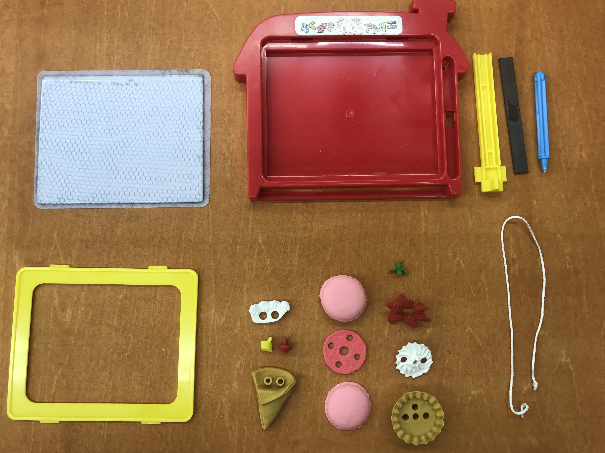

役に立たないもの

今回の課題は、ものを改造して役に立たないものを作るというものでした。
まず何も考えずに100均でいくつか機能性のあるものを購入して、 学校に持ち寄りました。
磁石の力で絵を書けたり消したりできるボードと、
組み立て構造になっているスイーツ型の消しゴムを選びました。
いろいろと組み立てて改造して、絵が描けるボードを土台にクリームやイチゴなどを盛り付けて、
ホールケーキのようなものにしましたが、写真を撮るのを忘れてしまいました。